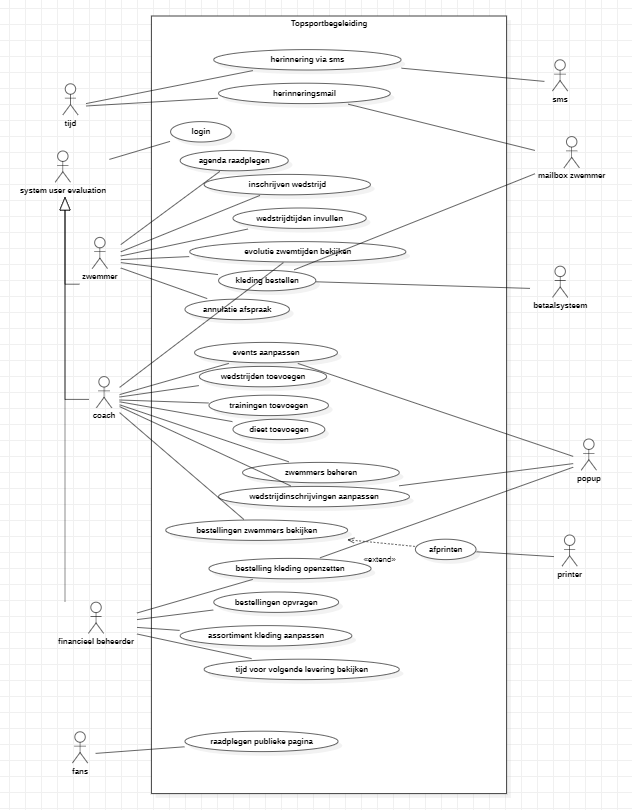
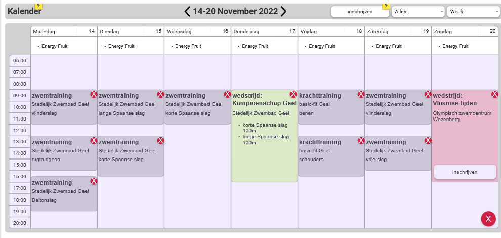
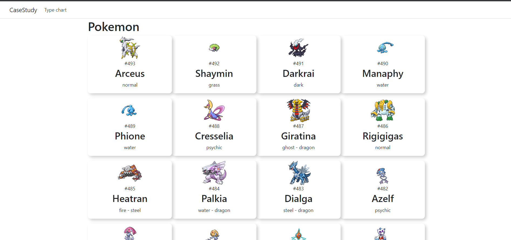
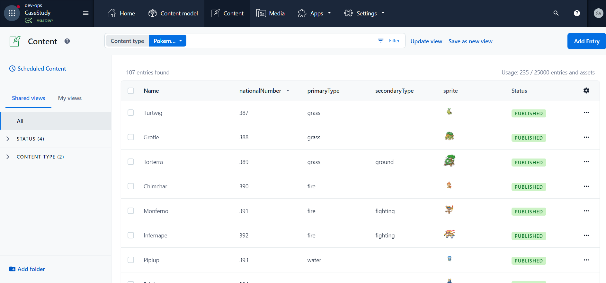

Requirements Analysis
For my course requirements analysis we had to do a group-project in which we had to create a Use case diagram and every corresponding use case description. We had to do this for a teacher playing our client, the client had an application that we had to build. We learned how to do meetings with a client and how to work in team to create a project.
Use case Diagram
The use case diagram is a way to display how a user interacts with the system you are trying to build. The use case diagram you see above is the one we came up with when working on our project.
Prototyping
After our use case diagram was finished we had to build a prototype. Prototypes are a way to show your client how the application you are build will look when it's finished.
Case study
For my DevOps course in school I had a project where I made a Web Application with ASP.NET and Contentful. Contentful is a service which allows you to handle data. It works with multiple programming languages, but I did my project with .Net. I create a simple pokedex which showed all the gen 4 pokemon.
The fun thing about this project was working with .NET. This was the first time working with this language, so it was a challenge to create a project without knowing the language, but it was fun to learn.
Contentful was a fun twist to this project, it allowed me to work with content in an OO way without having to use a database and write my own sql.